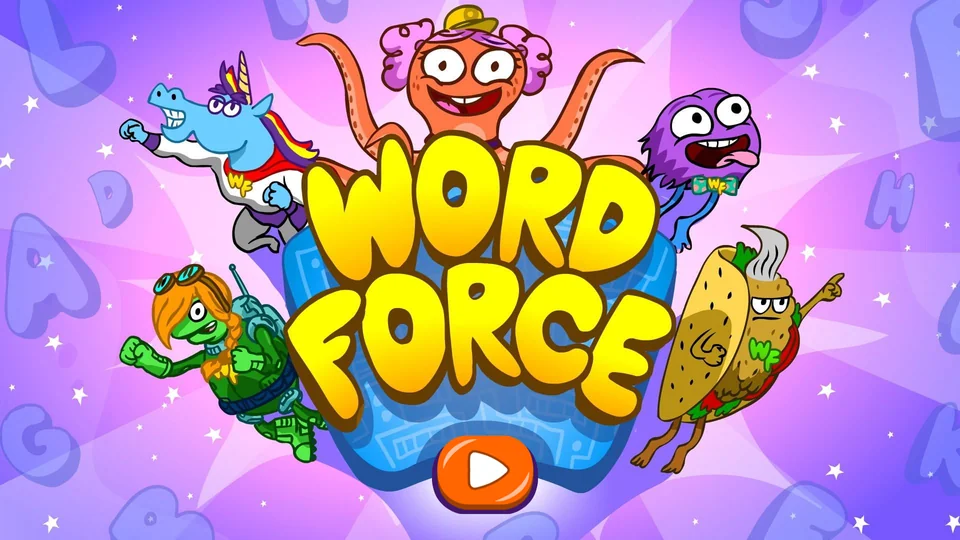
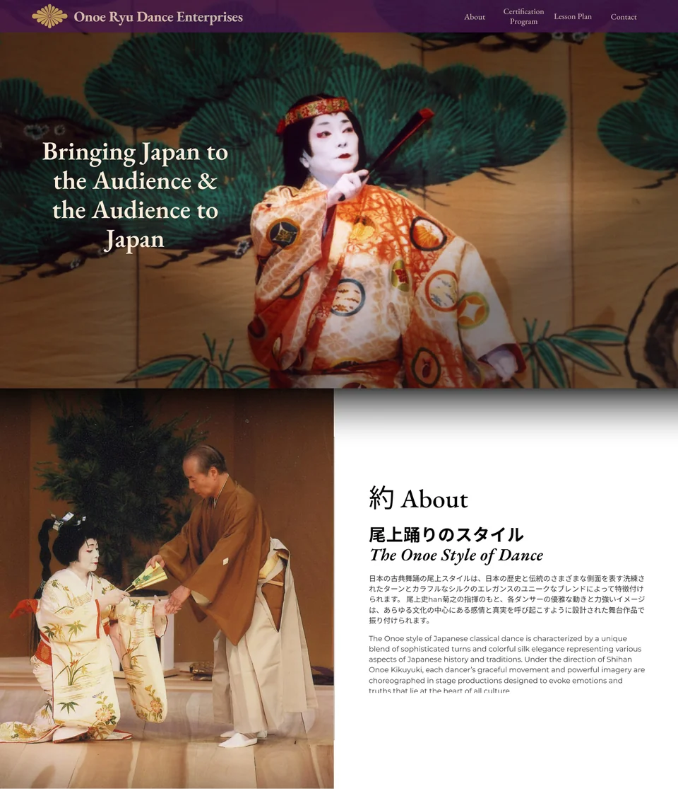
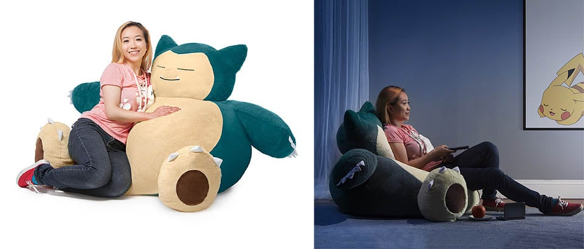

WORD Force
Helping little readers
find their way.
Making foundational literacy more intuitive, accessible, and fun for K–2 learners.
ToolsFigmaTrymataDovetail
Explore the project ↗
Making foundational literacy more intuitive, accessible, and fun for K–2 learners.

 Who Hacked?
Who Hacked?A story-driven cybersecurity simulation that turns technical training into a collaborative investigation.
 Facilitator Dashboard
Facilitator DashboardA facilitator overview for the multiplayer expansion of Who Hacked?


Product photos ↗ Snorlax beanbag
Snorlax beanbagMy work connects research, interaction, and visual design. I’m drawn to experiences that make something unfamiliar feel approachable—whether that’s a child’s first reading game or a technical training tool.
My background spans digital learning, brand systems, and physical products. Across each, I bring the same interest: understanding what people need, then making the next step feel clear.
More about my background ↗Thoughtful products. Interesting problems. A little possibility.